拆解三个已发布 APK 的前端设计：音流（Musiver 1.3.9）、Spotify（9.2.0）、Apple Music（7.0.0）。 目标是给 FlareTune 的纯消费型音乐客户端找出可落地成数值的参考，而不是形容词。
三家里，结构抄 Spotify，秩序抄 Apple，氛围抄音流 —— 但要把音流的工程短板补齐。
唯一把设计系统完整 token 化并写进 APK 的样本：间距 2–64、字号 9–48、圆角 2/4/6/8/16/999、控件 32/48/56。
把 SF Pro 整套搬上 Android；大标题 34sp、歌词 24sp/行高 26sp/块间距 32dp、mini player 88dp。
全屏照片背景 + 玻璃卡片 + 黑胶唱片（784×784 PNG 叠圆形封面）+ 播放器三段 tab。
同类产品：自建音乐库客户端。Flutter + libmpv + Rust 业务层，非开源。
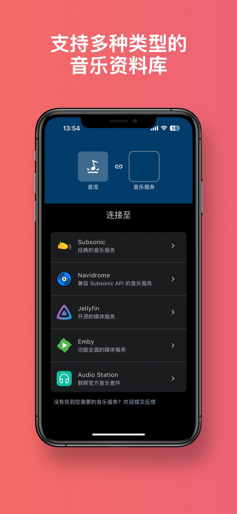
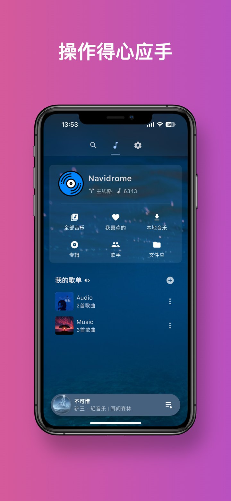
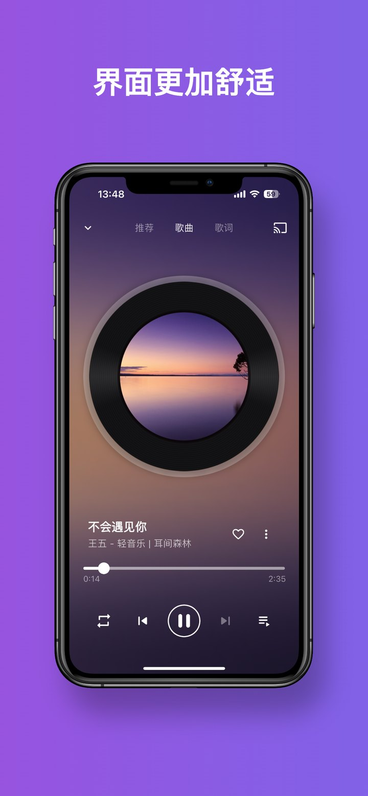
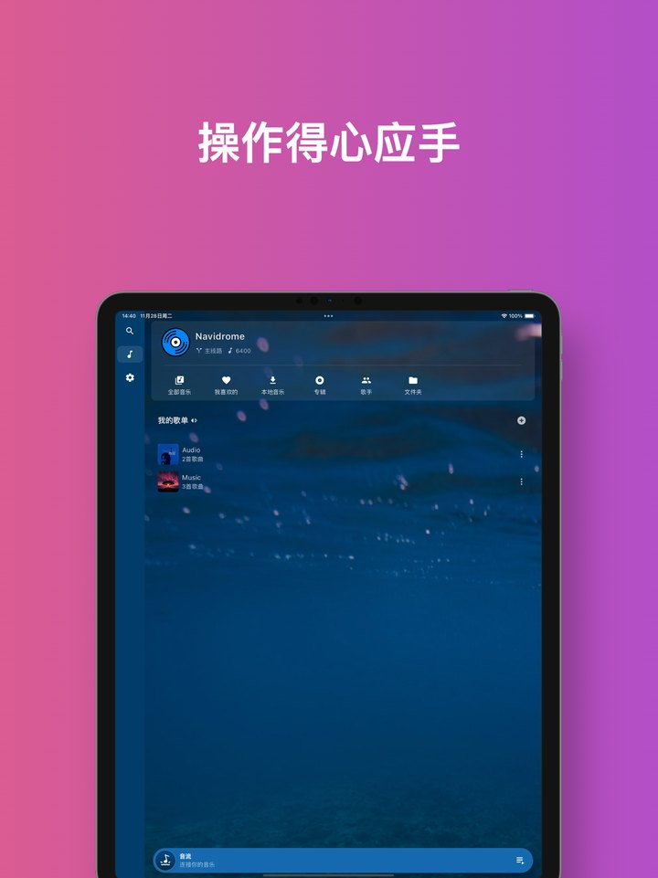
| 技术栈 | Flutter（libapp.so 12.1MB）+ libmpv.so + librust_lib_stream_music.so |
|---|---|
| 字体 | 27 个字体文件，全是图标字体（Material / Cupertino / Fluent / FontAwesome / MDI）；没有正文字体 |
| 内置视觉资产 | background.png 605×907 水下摄影、album_disc.png 784×784 黑胶框、artist_background.jpg 1280×853 |
| 主题能力 | 字符串表含 blurBackground / blurLinear / blurRadial、themeLightDark、custom_background、"Default Material You theme" |
| ARSC | color 224 / dimen 309 —— 几乎全是 AndroidX，自己的设计体系不在资源表里 |
① 黑胶唱片隐喻（一张 PNG + 圆形裁切封面，成本极低、记忆点极强）
② 播放器三段 tab（播放/队列/歌词压进一屏）
③ mini player 与导航解耦，独立悬浮
④ 模糊强度可配置，把"氛围"做成开关
① 五套图标字体混用，一屏之内笔画不一致
② 零正文字体 + 非等宽数字，进度与时长会抖动
③ 照片背景没有对比度下限
④ 无品牌色，截十张图十种颜色
移动端音乐播放器的交互事实标准，也是唯一能在 APK 里读到完整 token 阶梯的样本。
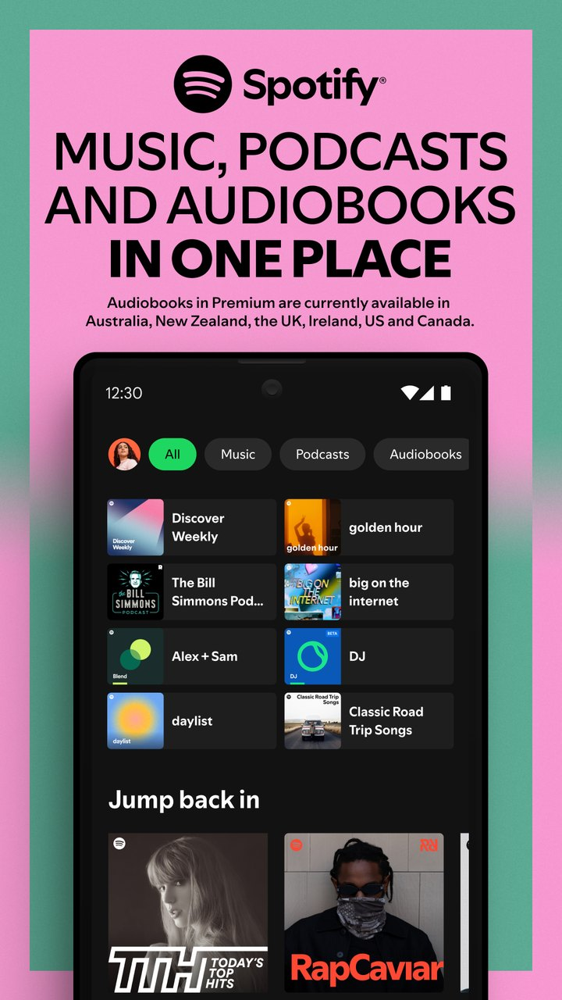
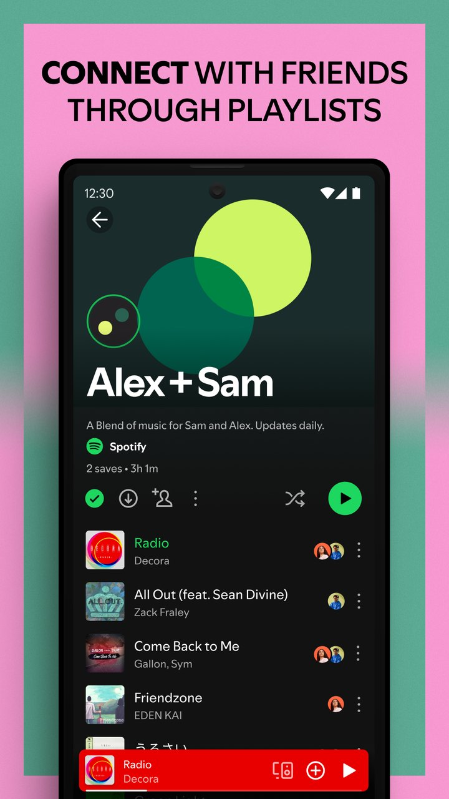
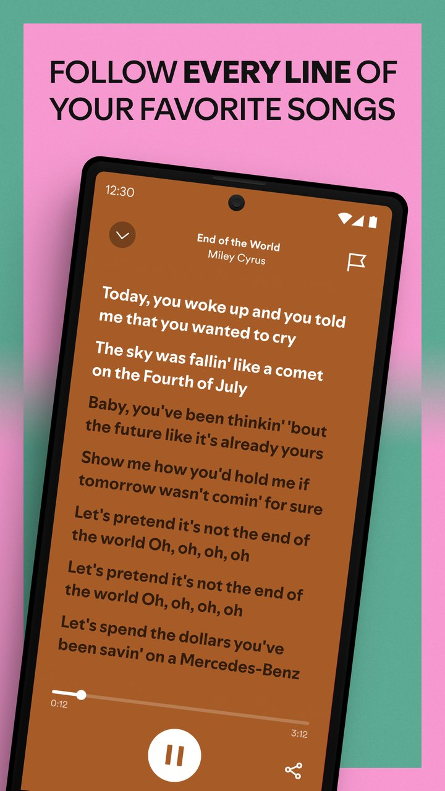
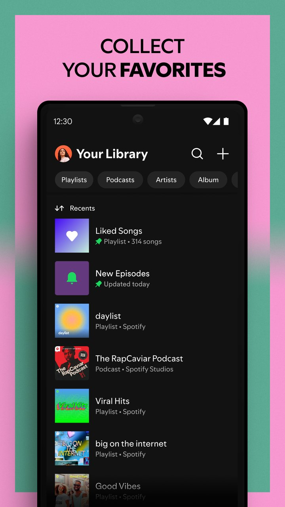
| 类别 | 数值 |
|---|---|
| 间距 | 2 · 4 · 6 · 8 · 12 · 16 · 20 · 24 · 32 · 40 · 48 · 64（base 16） |
| 字号 | 9 · 11 · 13 · 16 · 20 · 24 · 32 · 40 · 48（base 16） |
| 圆角 | 2 · 4 · 6 · 8 · 16 · 999（封面 8，chip 999） |
| 控件 | 32 · 48 · 56 |
| 筛选 chip | 高 48 / 圆角 24 / 横向内边距 34（cat_button_*） |
| 字体 | Spotify Mix UI（正文）+ Mix Mono（数字）+ spoticon（图标） |
| 图标 | 1542 个 drawable XML vs 31 个位图 |
| 实测底色 | #121212，占采样像素 22.7% |
取向相反：浅色优先、排版驱动、留白充足；把 iOS 的字体与尺寸体系整套搬上 Android。
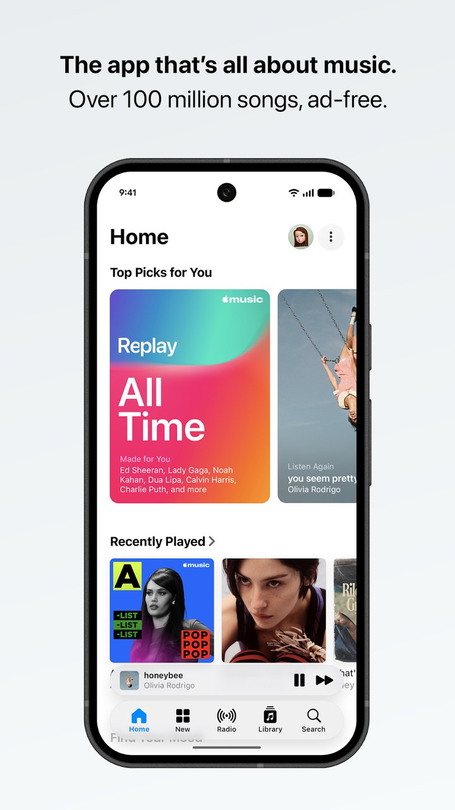
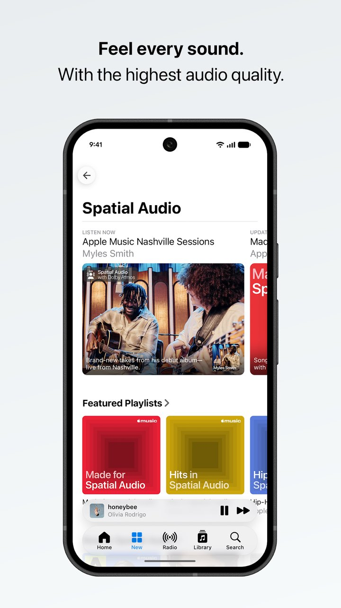
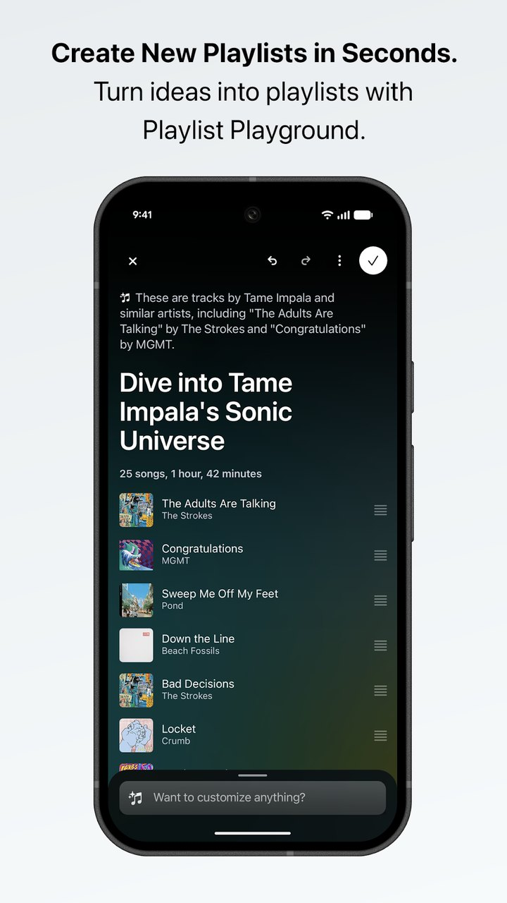
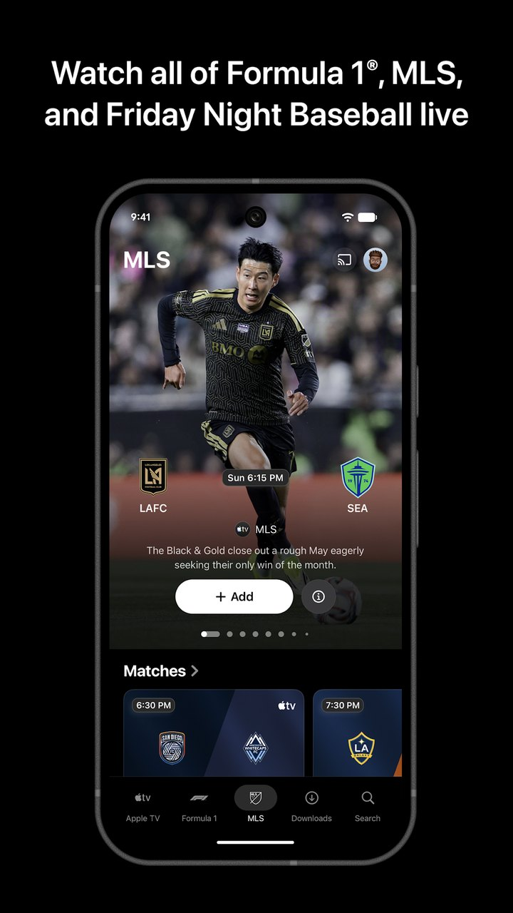
| 类别 | 数值 |
|---|---|
| 圆角阶梯 | 3 · 5 · 7 · 10 · 14 · 24 · 80；player_sheet_corner_radius = 16 |
| 排版 | 页面大标题 34sp、页面头标题 32sp、区块 17sp、tab 文字 11sp |
| mini player | 高 88dp、封面 40dp、按钮 48dp、最大宽 690dp |
| tab bar | 图标 30dp、文字 11sp、上下内边距 9 / 13 |
| 歌词 | 正文 24sp、行高 26sp、块间距 32dp（静态 40dp）、翻译 17sp |
| 字体 | 整套 SF Pro（含 Rounded 变体）+ roboto_medium_numbers.ttf（数字专用） |
| 图标 | 1701 个 drawable XML vs 96 个位图 |
| 维度 | 音流 | Spotify | Apple Music |
|---|---|---|---|
| 默认明暗 | 深色 | 深色 | 浅色 |
| 色彩来源 | 壁纸取色 + 封面 | 中性灰 + 单一品牌绿 | 白/黑 + 封面与渐变 |
| 背景手法 | 全屏照片 + 封面模糊 | 纯色 #121212 | 纯白 + 图片渐变遮罩 |
| 字体 | 系统字体 | Mix UI + Mix Mono | SF Pro + 数字字体 |
| 圆角 | 12–16 | 2/4/6/8/16/999 | 3/5/7/10/14/24/80 |
| 图标 | 5 套图标字体 | 1 套矢量 | 1 套矢量 |
| mini player | 悬浮胶囊 | 贴底长条 | 88dp 浮动 |
| token 化 | 低 | 高 | 中 |
沿用 Web 端的 zinc 中性色 + Inter，让两端是同一个产品；中文尺寸已重新调整。
Spotify 是 9–48，Apple 是 11–34；本方案取 11–30 —— 汉字方块占位，最小字号要更大，最大字号要更小。
| 组件 | 规格 |
|---|---|
| 筛选 chip | 高 36 · 圆角 18 · 内边距 16 · 触摸区 48 |
| 列表行 | 高 64/72 · 封面 48（圆角 8）· 标题 15 · 副标题 13 |
| mini player | 高 72 · 圆角 16 · 封面 44 · 进度 2dp 贴顶 |
| 播放器 | 封面 = 屏宽 − 64（圆角 12）· 播放键 56 实心 · 模糊 48–64 + 遮罩 55% |
| 歌词 | 20sp / 行高 1.4 / 块间距 28 / 非当前行 45% / 翻译 15sp |
| 动效 | 状态 180ms · 进入 240ms · 展开 320ms · 取色 400ms · 黑胶 24s/圈 |
① 图标只允许一套（音流的教训）；② 数字必须等宽（时长、进度、序号）；③ 沉浸背景必须能关， 关掉后仍是完整界面。